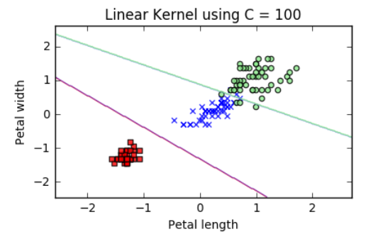
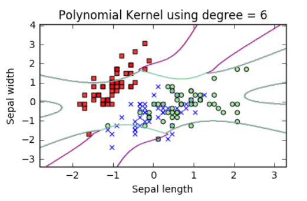
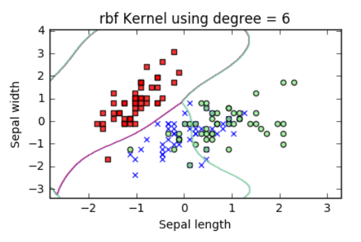

Algoritma Machine Learning Berbasis Supervised Learning
Classification, regression and outliers detection
Apa itu Support Vector Machine?
Support Vector Machine atau biasa disingkat dengan SVM ini adalah metode machine learning yang bekerja dengan cara
supervised learning untuk menyelesaikan tugas klasifikasi atau regresi. Dalam konteks pemodelan klasifikasi, SVM dianggap metode
yang lebih matang dibandingkan dengan metode-metode klasifikasi lainnya yang sudah ada. SVM memiliki kemampuan untuk mengatasi
masalah linear ataupun non-linear dengan memanfaatkan kernel trick.
Kelebihan dari Support Vector Machine adalah:
Efektif di ruang berdimensi tinggi.
Masih efektif jika jumlah dimensi lebih besar dari jumlah sampel.
Menggunakan subset titik pelatihan dalam fungsi keputusan (disebut support vector), sehingga juga hemat memori.
Serbaguna: fungsi Kernel yang berbeda dapat ditentukan untuk fungsi keputusan.
Sejarah Support Vector Machine
Pada tahun 1960an Vapnik memperkenalkan algoritma Support Vector Machine
(SVM) untuk menyelesaikan tugas klasifikasi. SVM merupakan algoritma yang dapat
digunakan untuk mempelajari regresi dan klasifikasi (Burbidge & Buxton, 2001). SVM
bekerja dengan cara mengamati fitur pada data untuk melakukan pemisahan kelas yang
didapatkan dari mempelajari pola informasi pada data. Pemisahan tersebut disebut dengan
“hyperplane” (Pisner & Schnyer, 2019). Jika hyperplane telah ditemukan, maka dapat
digunakan untuk mengklasifikasikan data baru pada label yang memungkinkan. SVM
termasuk dalam jenis supervised learning yang membuat model dari data untuk kemudian
dilakukan pemisahan ke dalam kelas-kelas tertentu (Cervantes et al., 2020). Oleh karena itu,
dalam pembuatan model SVM pada saat tahap pelatihan model mempelajari data latih yang
sebelumnya telah diberi label.
Kegunaan utama Support Vector Machine
Classification
Klasifikasi dalam SVM bekerja dengan cara plotting data sebagai "poin" di dalam ruang n-dimension. Tujuannya adalah untuk mencari hyperplane paling optimal
yang dapat membagi data poin kedalam kelas masing masing dengan tetap mencari margin terbesar antara hyperplane dan data poin terdekat untuk setiap kelas.
Regression
Berbeda dengan klasifikasi, regresi dala SVM bekerja dengan cara mencari hyperplane terbaik untuk mengatasi masalah data poin dalam ruang kontinu. Tugas regresi
dalam SVR diraih dengan memetakan data input kedalam ruang yang berdimensi lebih tinggi untuk mencari hyperplane terbaik. Hyperplane terbaik dalam regresi didapatkan
dengan memperhatikan margin maksimal dan minimal kesalahan prediksi.
Outliers Detection
SVM juga dapat digunakan untuk mendeteksi outlier. Outlier adalah data pencilan yang bersifat berbeda dengan kumpulan data lainnya yang biasanya berada pada titik data
yang jauh dengan mayoritas. Beberapa pendekatan SVM untuk deteksi outlier adalah berbasis margin, one-class SVM, kernel trick, metode density based.
Contoh Kernel SVM
Nama
Pengertian
Rumus
Linear
Linear kernel adalah kernel yang paling sederhana dan digunakan untuk
menyelesaikan masalah linear. Kernel ini tidak memiliki parameter apapun dan
digunakan untuk mengerjakan kasus berdimensi rendah sebagai contoh adalah kasus
yang hanya terdapat dua kelas
K(x, xi) = (x.xi)
Polynomial
Kernel ini memiliki tiga parameter yaitu 𝛾, 𝑐𝑜𝑒𝑓, dan 𝑑. Parameter 𝛾 secara default
adalah 1/𝑘 dimana 𝑘 adalah jumlah kelas, parameter 𝑐𝑜𝑒𝑓 secara default memiliki
nilai 0, dan parameter 𝑑 merupakan polynomial degree secara default memiliki nilai 3
K(x, xi) = [y * (x.xi) + coef]d
RBF
RBF SVM bekerja dengan memetakan data masukan ke dalam ruang fitur berdimensi lebih tinggi,
di mana kelas-kelas dapat dipisahkan oleh hyperplane. Algoritme ini menggunakan fungsi kernel,
seperti Radial Basis Function, untuk mengukur kemiripan antara pasangan titik data dalam ruang fitur.
K(x, xi) = exp(-y * ||x - xi||2 + C)
Sigmoid
Sigmoid kernel memiliki karakteristik yaitu harus mencapai kondisi tertentu dalam
penerapannya sehingga jarang digunakan. Sigmoid kernel lebih sering dipakai dalam
jaringan syaraf tiruan (neural network). Kernel ini terdiri dari dua parameter yaitu 𝛾
dan 𝑐𝑜𝑒𝑓. Parameter 𝛾 memiliki nilai default 1/𝑘 dimana nilai k adalah jumlah kelas
dan parameter 𝑐𝑜𝑒𝑓 memiliki nilai default yaitu 0.
K(x, xi) = tanh(y(x.xi) + coef)
Optimization Problem
Dalam algoritma Support Vector Machine, Optimization Problem adalah suatu masalah untuk
mencari garis hyperplane maksimal yang dapat memisahkan kelas positif dan negatif. Jika garis
maksimum telah ditemukan, maka disebut dengan maximum margin hyperplane.
Dalam proses pencarian hyperplane, SVM akan mencari sampel data yang paling dekat dengan decision boundary
(garis imajiner yang membagi input space menjadi kelas berbeda), data sample tersebut disebut dengan support vector.
Support vector ini menjadi digunakan untuk menentukan hyperplane. Margin merupakan jarak antara garis hyperplane dengan
support vector terdekat. Tujuan dari optimization problem adalah untuk memaksimalkan Margin dan membuat hyperplane sejauh mungkin
dengan support vector.
Decision Function
Setelah optimmization problem diselesaikan, penentuan kelas dapat dilakukan dengan menggunakan Decision Function berikut:
Contoh Visualisasi Data dengan Kernel Berbeda



Contoh kode SVM bahasa Python dengan dataset Iris
Import library yang dibutuhkan
import numpy as np
import pandas as pd
from sklearn import svm
from sklearn.model_selection import train_test_split
from sklearn.metrics import accuracy_score
from sklearn.preprocessing import StandardScaler
Memuat dataset, pada contoh ini pakai iris.csv
dataset_iris = pd.read_csv('iris.csv')
# Membagi dataset menjaddi label dan fitur
X = dataset_iris.iloc[:, :-1]
y = dataset_iris.iloc[:, -1]
# Tahap preprocess dengan standarscaler
scaled_dataset = StandardScaler()
X = scaled_dataset.fit_transform(X)
Bagi dataset menjadi data train dan data test 70% dan 30%
# Melakukan train-test-split pada dataset
X_train, X_test, y_train, y_test = train_test_split(X, y, test_size=0.3)
Membangun model SVM dengan kernel polynomial
# Membuat Model SVM dengan kernel polynomial
model_svm = svm.SVC(kernel='poly')
model_svm.fit(X_train, y_train)
Testing model SVM yang telah dibuat dengan data test
# Melakukan prediksi untuk untuk ditest performanya
y_pred = model_svm.predict(X_test)